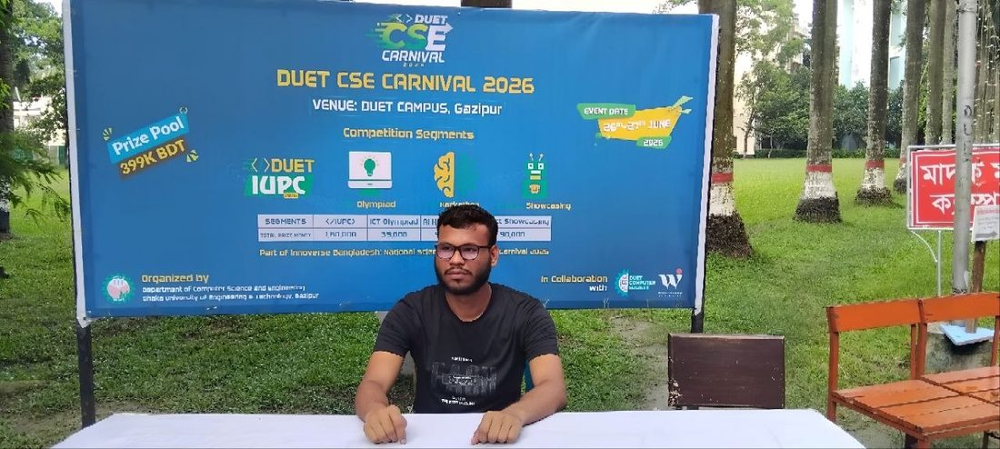

[ABOUT]
The person behind the commits.
A closer look at how I got here, what I believe about building things, and where I'm headed next.
- Based in Bangladesh
- Studying CSE, DUET — 2nd year
- Languages Bengali, English
- Focus Go, PostgreSQL, full-stack platforms
- Currently Building Branotix
[BIO]
Learning by shipping, not just studying
I’m Pulock Kumar, a CSE student at Dhaka University of Engineering & Technology (DUET) (2nd year, 2nd semester). Alongside my academic studies, I’m focusing on backend engineering with a strong interest in fintech. Right now, I’m learning Golang and PostgreSQL to build scalable backend systems, while also practicing C++ and solving DSA problems regularly to strengthen my problem‑solving skills. My future plan is to move into industry with Java and gain deeper knowledge in core financial technologies, aiming to work in a fintech company. Beyond backend, I’m also curious about machine learning, neural networks, and AI. Although I haven’t focused on them yet, I plan to explore these areas in the future alongside my professional career. My long‑term goal is to become a skilled backend engineer who can contribute to fintech innovation while staying future‑proof in the tech industry.
I believe in learning from the fundamentals rather than skipping past them. That means implementing data structures and algorithms by hand, understanding how the systems I depend on actually work, and building real projects from scratch instead of stitching together templates. It's slower, but it's the kind of understanding that doesn't fall apart under pressure.
Right now, most of my energy goes into Branotix — a free mentorship platform connecting HSC and Diploma students across Bangladesh with verified university students who've already been through the process. I care about this specific problem because access to honest, one-on-one guidance shouldn't depend on who you happen to know.
Outside of active development, I spend time thinking about the intersection of technology and education, and I engage seriously with questions around AI alignment and how these systems should be designed responsibly — not as an abstract interest, but because the tools I'm learning to build will increasingly touch real people's decisions.
[JOURNEY]
How things have progressed
Started with the fundamentals
Built a foundation in C/C++, core data structures, and how computers actually work underneath the frameworks — the part most people are tempted to skip.
First full-stack experiments
Moved into Go and PostgreSQL, and started building complete systems: authentication, APIs, and databases that had to hold up under real use, not just pass a demo.
Building Branotix in public
Designing and shipping a mentorship network end to end — JWT auth, WebRTC calling, MediaMTX live streaming, and a rebuilt branded video platform — while documenting the process along the way.
Going deeper into backend & systems
Continuing to strengthen distributed systems knowledge, contributing to open source, and exploring where applied AI engineering intersects with the backend work I already enjoy.

[CAMPUS]
Life at DUET
Being part of the CSE department at DUET means staying close to a community that's actively building — hackathons, olympiads, and department events that push me to test what I'm learning against real problems and real deadlines, not just assignments.
It's also where the idea for Branotix took shape: talking to juniors who had nowhere reliable to ask the questions I once had myself.